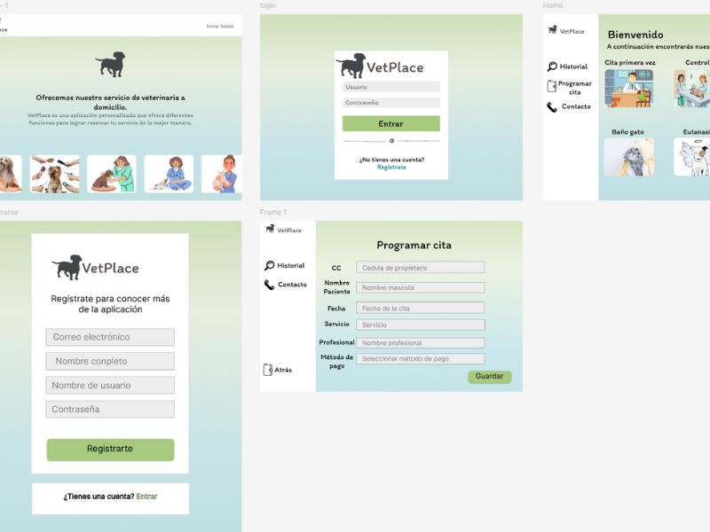

PORTFOLIO




Hola, soy Sara Bastidas. Persona práctica y orientada a cumplir mis objetivos, desde hace algunos años me ha llamado mucho la atención aprender sobre programación, me motiva mucho conocer cosas nuevas, poder implementarlas y aprender de ellas. Disfruto trabajar en equipo ya que cada persona tiene una visión diferente y puedo aprender mucho más, mi enfoque proactivo y mi pasión me han ayudado a por el aprendizaje contribuyen al logro de metas y al desarrollar soluciones efectivas para diferentes situa.
Durante la pandemia, tuve la oportunidad de adentrarme en el mundo de la programación, lo que me motivó a estudiar esta carrera. He aprendido mucho de mis maestros y compañeros, lo que me ha permitido descubrir mis intereses en un ámbito tan vasto como lo es la tecnología. Actualmente, estoy cautivada por el desarrollo frontend y las buenas prácticas de diseño, con el objetivo de crear proyectos que no solo sean útiles, sino que también logren cautivar a los clientes. Además, soy parte activa del semillero de música de la universidad y he sido monitora dentro de mi facultad, lo que me ha brindado valiosas experiencias de aprendizaje y colaboración.
El inglés siempre me ha parecido un idioma fundamental, no solo para la vida, sino también en el ámbito de la programación. Durante el último año, he dedicado parte de mi tiempo libre a mejorar mi dominio del idioma, con el objetivo de abrir nuevas oportunidades. Además, me he sentido cautivada por el francés y estoy entusiasmada por aprender este nuevo idioma para poder conocer a nuevas personas.
Terminé mis estudios como bachiller en la ciudad de Pasto. Durante este período, descubrí algunas de mis pasiones que aún conservo. El baloncesto fue fundamental en mi vida; formé parte del equipo representativo del colegio y de varios clubes, lo que me permitió aprender sobre el trabajo en equipo y las relaciones interpersonales. También fui integrante del grupo base de música de mi institución, donde aprendí la importancia de la dedicación y el compromiso para alcanzar mis metas.
"Selene for Women" es una aplicación diseñada para ayudar a las mujeres a llevar un registro de su ciclo menstrual, proporcionando información valiosa para su salud sexual. Es una aplicación responsive, construida con HTML, CSS y JavaScript, que se puede descargar en dispositivos móviles. Es completamente gratuita y no requiere conexión a internet, lo que la hace accesible para una mayor cantidad de personas. Repositorio
FigmaEste proyecto consiste en la creación de un sitio web para facilitar donaciones destinadas a mejorar la vida de los habitantes de calle en Medellín. A través de la plataforma, buscamos sensibilizar a la comunidad y recaudar fondos para rehabilitación, alimentación, y atención médica, en colaboración con fundaciones locales. El sitio, desarrollado con HTML, CSS y JavaScript, es responsive y está diseñado para ofrecer una navegación óptima, ayudando a las fundaciones a ampliar su alcance y apoyar a más personas.
Semillas de cambio RepositorioLa aplicación deportiva que hemos desarrollado fue inicialmente diseñada para el Inder de Medellín, pero puede adaptarse a cualquier escuela deportiva. Utilizando HTML, CSS y JavaScript, esta herramienta facilita la toma de asistencia en clases y permite a los padres inscribir a sus hijos en diferentes cursos de manera eficiente. Con una interfaz amigable, nuestro objetivo es mejorar la comunicación entre padres, profesores y alumnos, promoviendo la participación activa de los jóvenes en actividades deportivas y contribuyendo a su desarrollo integral. Repositorio